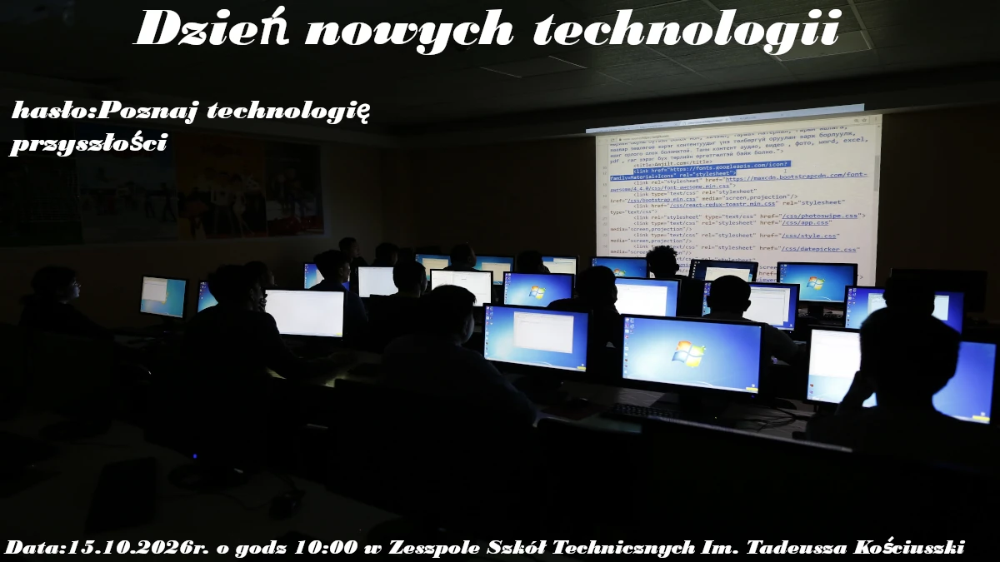

Autor: Bartosz Grzywacz

Dzień technologii
Na plakacie użyto grubego, bezszeryfowego kroju pisma z mocnym pochyleniem (kursywą). Taki wybór czcionki nadaje napisom dynamiczny i nowoczesny wygląd, który dobrze pasuje do tematyki nowych technologii. Dodatkowo, aby tekst był dobrze widoczny na ciemnym tle zdjęcia, zastosowano biały kolor liter z delikatnym, ciemnym cieniem dookoła nich.
Z fotografi jak na to ze jestem amatorem gimpa jestem zadowolony.